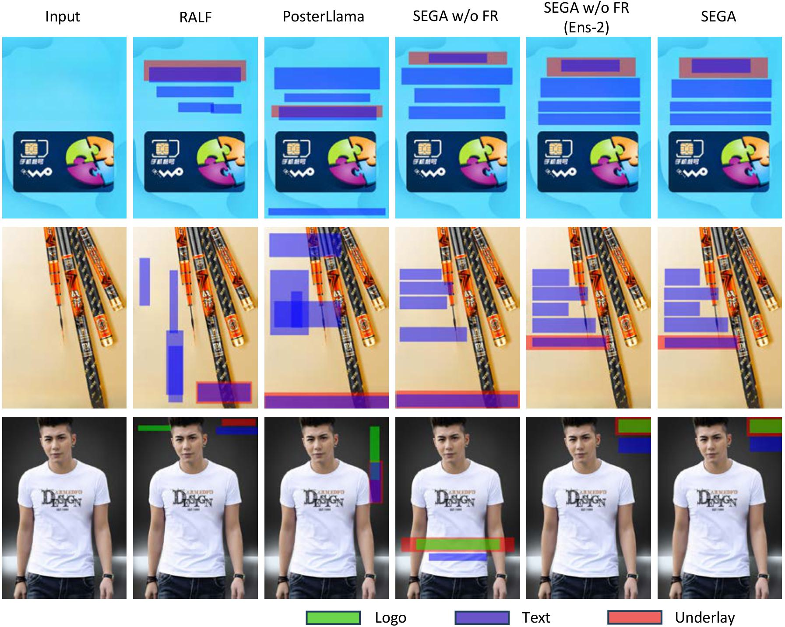
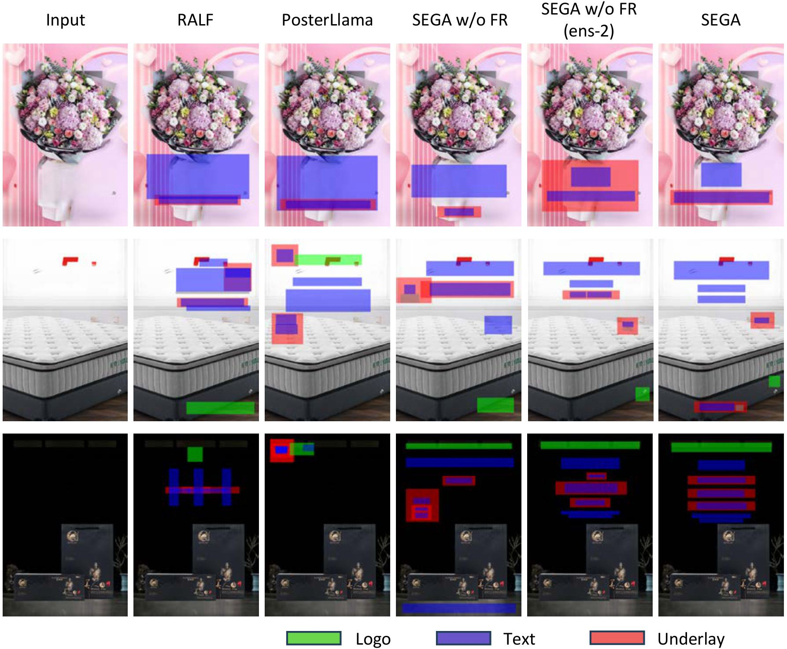

Comparison to State-of-the-Art Methods
Quantitative Results
Table.1 Experimental results on the PKU and CGL dataset.
| Method | PKU | CGL | Graphic | Content | Graphic | Content | Ali ↓ | Ove ↓ | Und_l ↑ | Und_s ↑ | Read ↓ | Occ ↓ | Ali ↓ | Ove ↓ | Und_l ↑ | Und_s ↑ | Read ↓ | Occ ↓ |
|---|---|---|---|---|---|---|---|---|---|---|---|---|
| Non-LLM Based | ||||||||||||
| CGL-GAN (IJCAI, 2022) | - | 0.0380 | - | 0.4800 | 0.0158 | 0.1320 | - | 0.0470 | - | 0.6500 | 0.0213 | 0.1400 |
| LayoutDM (CVPR, 2023) | - | 0.1720 | - | 0.4600 | 0.0201 | 0.1520 | - | 0.0260 | - | 0.7900 | 0.0192 | 0.1270 |
| RALF (CVPR, 2024) | 0.0031 | 0.0095 | 0.9686 | 0.8981 | 0.0138 | 0.1243 | 0.0023 | 0.0059 | 0.9858 | 0.9652 | 0.0180 | 0.1263 |
| LLM Based | ||||||||||||
| PosterLlama (ECCV, 2024) | 0.0036 | 0.0080 | 0.9874 | 0.9497 | 0.0170 | 0.1380 | 0.0022 | 0.0042 | 0.9823 | 0.9463 | 0.0294 | 0.2453 |
| SEGA w/o FR 7B | 0.0037 | 0.0052 | 0.9873 | 0.9471 | 0.0150 | 0.1336 | 0.0023 | 0.0032 | 0.9817 | 0.9522 | 0.0298 | 0.2442 |
| SEGA w/o FR (Ens-2) 7B | 0.0035 | 0.0041 | 0.9892 | 0.9673 | 0.0144 | 0.1305 | 0.0021 | 0.0024 | 0.9879 | 0.9657 | 0.0296 | 0.2438 |
| SEGA（7B） | 0.0035 | 0.0033 | 0.9897 | 0.9731 | 0.0142 | 0.1286 | 0.0020 | 0.0017 | 0.9913 | 0.9782 | 0.0294 | 0.2430 |
| GT | 0.0036 | 0.0009 | 0.9950 | 0.9444 | 0.0119 | 0.1185 | 0.0023 | 0.0003 | 0.9937 | 0.9402 | 0.0296 | 0.2390 |
Table.2 Experimental results on the Crello dataset.
| Method | Rule-based Metrics | Aesthetic Scores | ||||||||||
|---|---|---|---|---|---|---|---|---|---|---|---|---|
| Graphic | Content | SDL ↑ | SQL ↑ | STV ↑ | SIO ↑ | SMean ↑ | ||||||
| Ali ↓ | Ove ↓ | Und_l ↑ | Und_s ↑ | Read ↓ | Occ ↓ | |||||||
| Non-LLM Based | ||||||||||||
| FlexDM (CVPR, 2023) | 0.0122 | 0.1139 | 0.6889 | 0.5034 | 0.0516 | 0.4850 | 4.563 | 5.126 | 4.873 | 5.239 | 4.950 | |
| LLM Based | ||||||||||||
| PosterLlama (ECCV, 2024) | 0.0099 | 0.0238 | 0.9204 | 0.7378 | 0.0395 | 0.4041 | 5.292 | 5.796 | 5.263 | 5.819 | 5.542 | |
| SEGA w/o FR 7B | 0.0102 | 0.0121 | 0.8206 | 0.6698 | 0.0304 | 0.4002 | 5.553 | 6.332 | 5.693 | 5.448 | 5.756 | |
| SEGA w/o FR (Ens-2) 7B | 0.0100 | 0.0093 | 0.8501 | 0.7202 | 0.0285 | 0.3957 | 5.642 | 6.418 | 5.811 | 5.529 | 5.850 | |
| SEGA 7B | 0.0086 | 0.0040 | 0.9337 | 0.8978 | 0.0282 | 0.3964 | 5.792 | 6.411 | 5.824 | 5.708 | 5.941 | |
| SEGA w/o FR 13B | 0.0102 | 0.0093 | 0.8485 | 0.7315 | 0.0271 | 0.3948 | 5.923 | 6.624 | 6.253 | 5.991 | 6.197 | |
| SEGA w/o FR (Ens-2) 13B | 0.0097 | 0.0075 | 0.8715 | 0.7715 | 0.0260 | 0.3874 | 6.128 | 6.652 | 6.058 | 5.822 | 6.165 | |
| SEGA 13B | 0.0095 | 0.0025 | 0.9541 | 0.9270 | 0.0260 | 0.3907 | 6.149 | 6.745 | 6.348 | 6.038 | 6.320 | |
| GT | 0.0100 | 0.0116 | 0.9643 | 0.8187 | 0.0259 | 0.3797 | 6.882 | 7.543 | 6.863 | 6.025 | - | |
Qualitative Results
Qualitative Results on PKU dataset

Qualitative Results on CGL dataset
